1.1. Using the ‘Verify Element’ option¶
In an Automation test session, as you move the mouse pointer over the device screen, you will see different rectangular boxes being displayed.
Each box highlights an element on the current app screen/page.
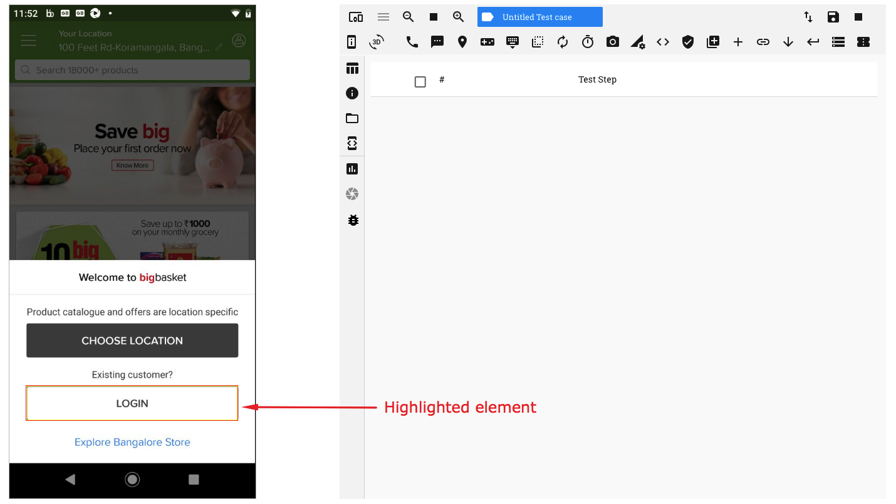Hover the pointer over an element (so that a rectangle is displayed) and perform a left-click. You will see a context menu open up.
On the context menu, click on the option ‘Verify Element’
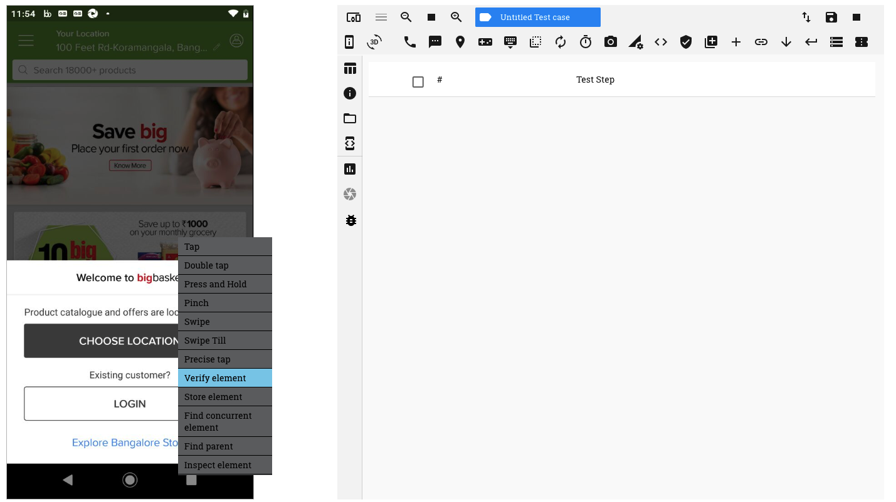You now see a ‘Create Verification’ window pop up
On this window you can see the following:-
- Source
- Target
- ‘Add Verification Step’ button
- ‘Invert Verification Result’ checkbox
We shall understand each of the above terms as we proceed further
The first step for any verification is to identify the ‘Source’ element
When executing a ‘Verify Element’ action, the ‘Source’ is always going to be the element on which the left-click was performed. Hence, the ‘Source’ field on the top left corner of the window is disabled by default.
If the Source element has a value present for its ‘text’ attribute, then, this value will be displayed under ‘Source’. In the example above, the element has the value ‘Login’ for its ‘text’ attribute.
The second step is to identify a ‘Target’ element
This can be done in two ways:-
- By directly using the ‘Add Verification Step’ button
- By using the ‘Target’ drop down
1. Directly using the ‘Add Verification Step’ button
The ‘Add Verification Step’ option is used when you want to compare the value of the Source attribute against:
- its default value populated; or;
- a custom value
Click on the ‘Add Verification Step’ button. A verificaiton row is seen added
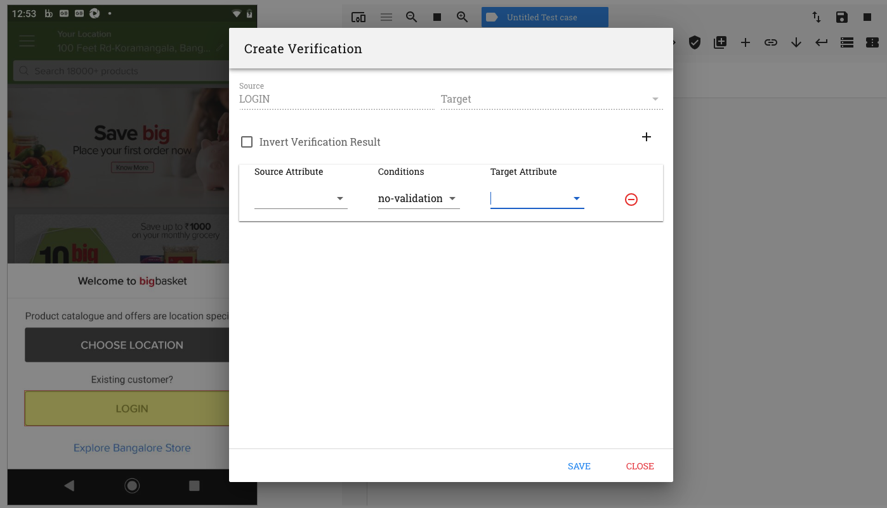On the verification row, you need to select 3 values:-
- the Source attribute
- the condition to be evaluated (or comparison criterion)
- the Target attribute
a. the Source attribute
On clicking on the ‘Source’ attribute drop down, a list of all the attributes associated with the source element, along with their values, are displayed.
Select the attribute whose value you want to compare by clicking on it.
Let us click on the ‘text’ attribute in this example
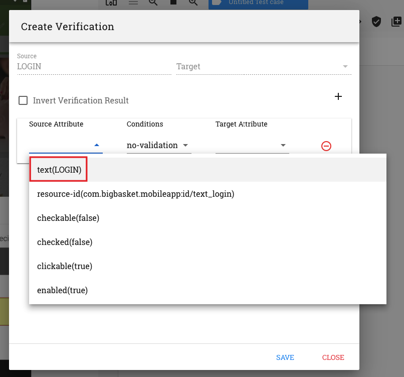b. the condition to be evaluated
Click on the ‘Conditions’ drop down. A list of various conditions can be seen.
The conditions ‘is exactly’, ‘contains’ and ‘is contained in’ are used for string comparisons
The conditions ‘=’, ‘<’, ‘>’, ‘<=’ and ‘>=’ are used for numeric comparisons
Select the condition to be checked by clicking on it.
Let us click on the condition ‘is exactly’ in this example
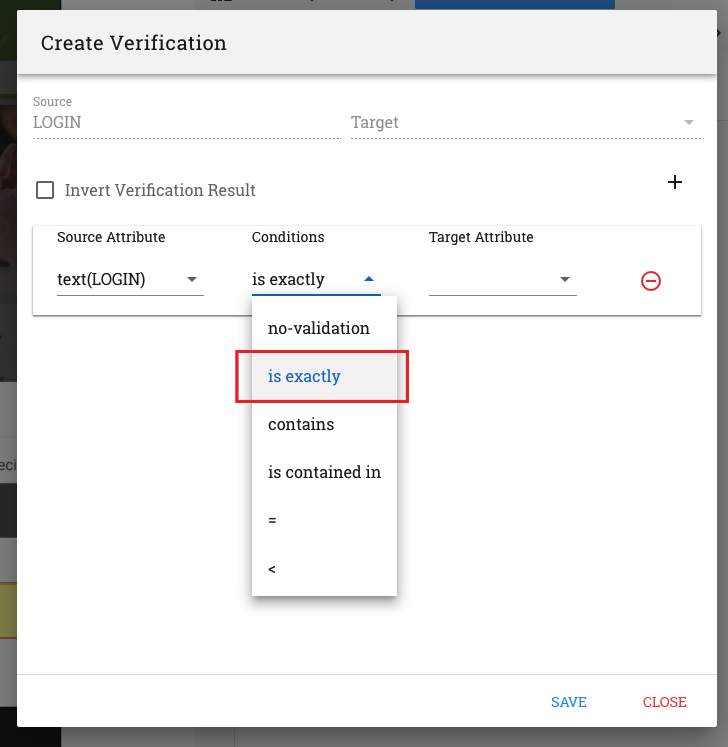c. the Target attribute
By default, the Target element in this case is the same as the Source element
On clicking on the ‘Target’ attribute drop down, a list of all the values associated with the attributes of the element are displayed.
Also note that the text in this drop down is editable.
You now have two options here:-
Click on a value on the drop down. This value will be compared against the Source attribute value
OR
Manually enter a value in the target attribute field to be compared against
1. Click on a value on the drop down.
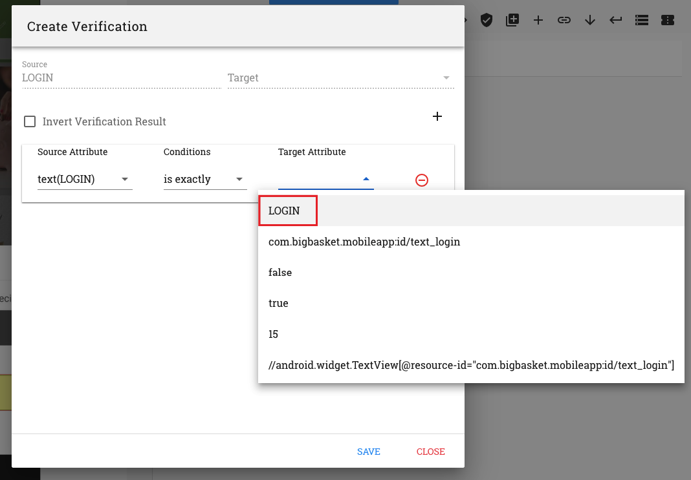This option can be used to ensure that the expected/default value is being displayed or populated for that attribute
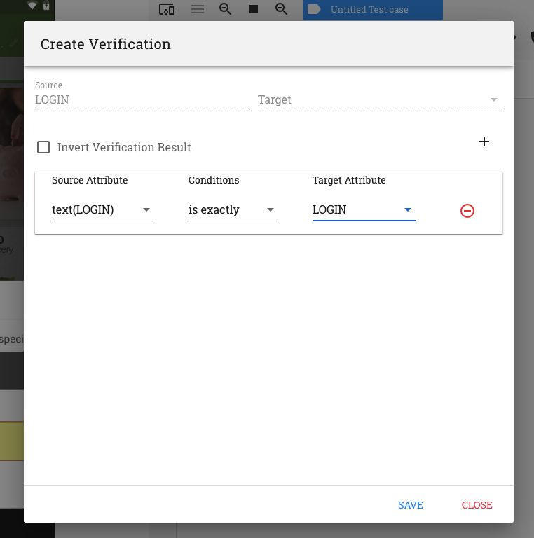The above verification can be read as follows:
Is the value in the text attribute of the Source element exactly the same as the value present in the Target attribute field ?
E.g. Is the text on the Login button exactly the same as ‘Login’
2. Manually enter a value in the target attribute field
This option can be used to enter custom values in the target attribute field manually
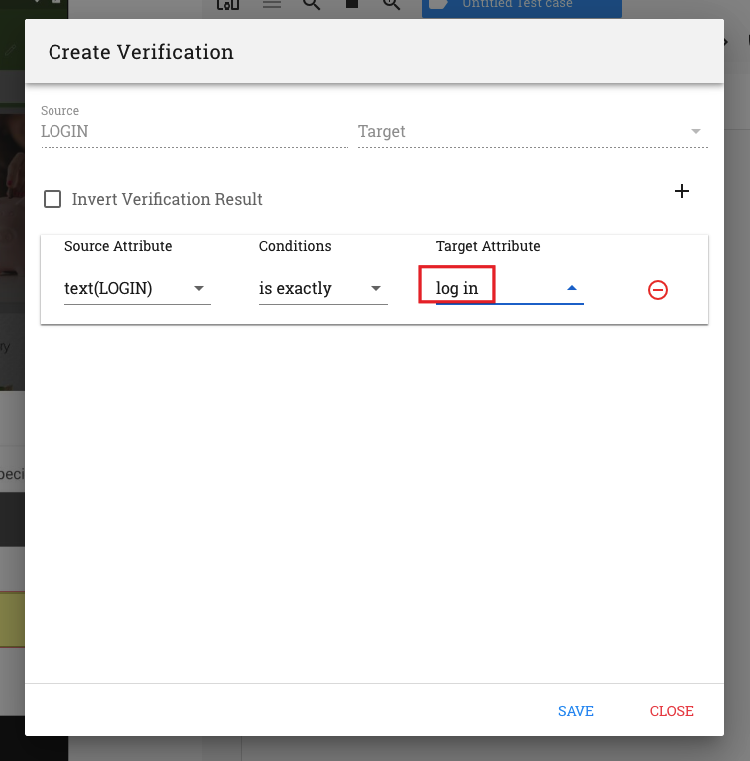
2. By using the ‘Target’ drop down
This option may be used when you want to compare the value of the Source attribute with that of a value stored in a previous test step
The previous test step, in this case, should always be a ‘Store Element’ test step. Hence you need to perform a ‘Store Element’ action on that element.
The details of the attribute values available for comparison may be viewed in the ‘Return Data’ section of the ‘Store Element’ test step that is recorded
The Target element may be selected from the list of test steps displayed in the Target drop down.
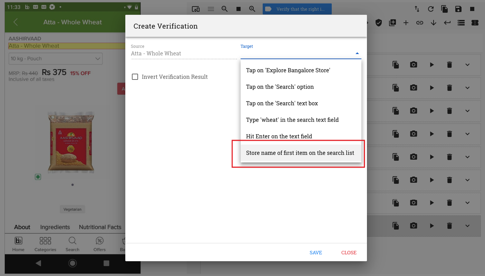On clicking on the ‘Add Verification Step’ button. A verification row is seen
Select the Source attribute, the comparison criterion and Target attribute from their resppective drop downs.
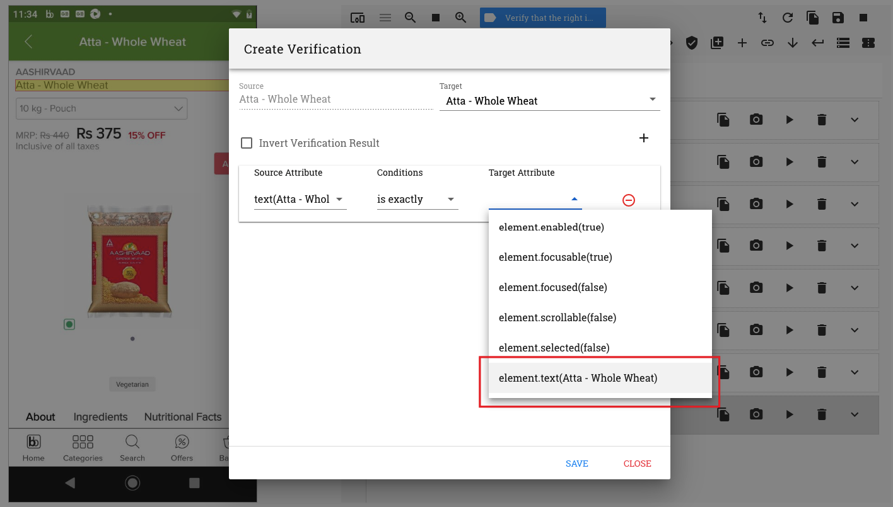We now have the following comparison recorded:
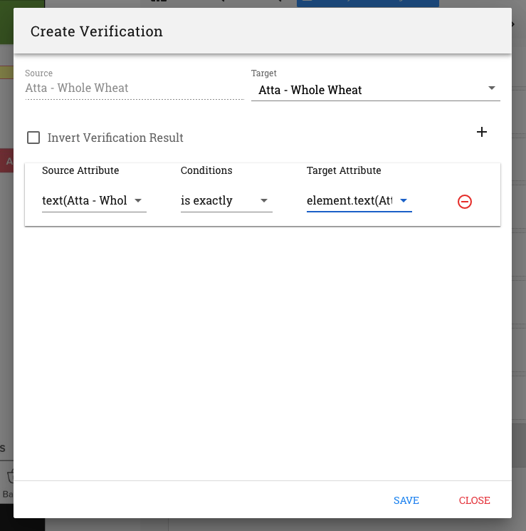The above verification can be read as follows:
Is the value in the text attribute of the Source element exactly the same as the value present in the text attribute of the Target element ?
E.g. Is the item name on the product page exactly the same as the item name on the search list
Note: The Target element will always be a ‘Store’ test step.